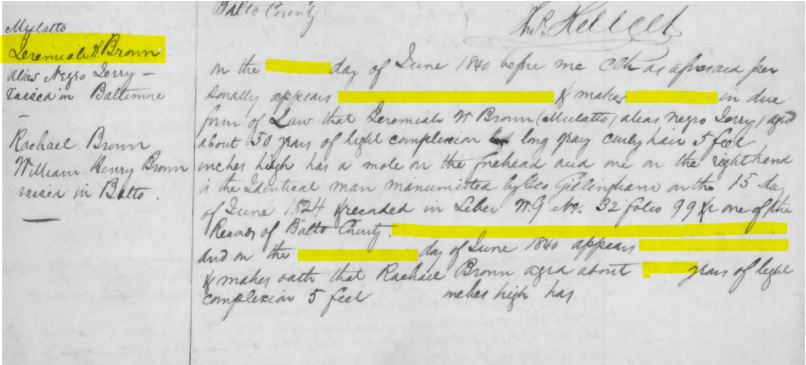
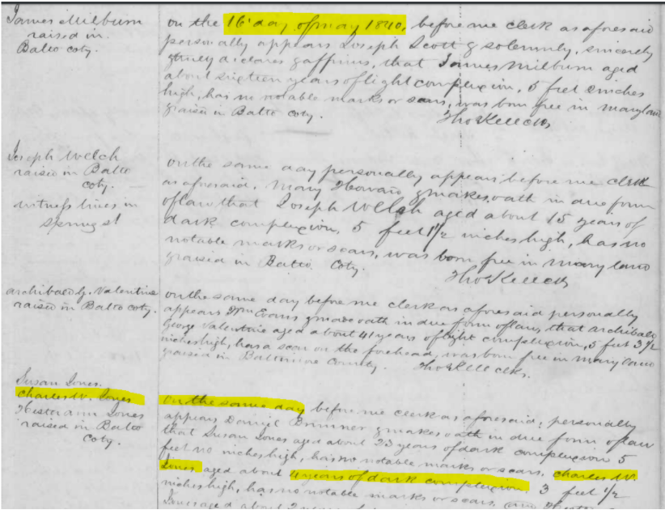
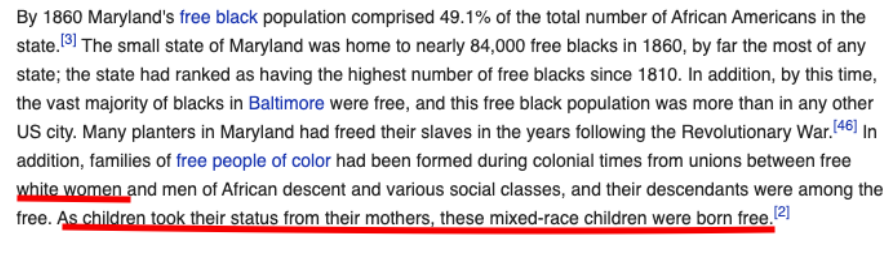

Certificates Of Freedom — Data Analysis Part 1#
According to (Weintrop et al., 2015) “Data manipulation includes sorting, filtering, cleaning, normalizing, and joining disparate datasets. There are many strategies that can be employed when analyzing data for use in a scientific or mathematical context, including looking for patterns or anomalies, defining rules to categorize data, and identifying trends and correlations.” Below are the steps performed for data manipulation and analysis process using Python programming language on the Certificates of Freedom dataset. The modules are split into two parts - Part 1 and Part 2.
Acquiring or Accessing the Data#
The data for this project was originally crawled from the Maryland State Archives Legacy of Data collections. The data source is included in this module as a comma-separated values file. The link below will take you to a view the data file:
The dataset has 23,655 rows of data.
To process a csv file in Python, one of the first steps is to import a Python library called as ‘pandas’ which would help the program convert the csv file into a dataframe format or commonly called as a table format. We import the library into the program as below:
# Importing libraries - pandas used for data science/data analysis and machine learning tasks and numpy - which provides support for multi-dimensional arrays
import pandas as pd
import numpy as np
Using the pandas library, we created a new dataframe in the name ‘df’ using read_csv function as shown below: After creating the dataframe, the print() function is used to display the top 10 rows loaded in the dataframe.
# creating a data frame which is a table-like data structure that could read csv files, flat files, and other delimited data.
# Converting input data into a data frame is a key starting point with Python programming language for big data analytics
# Below command reads in the Certificates of Freedom dataset which should already be loaded in a folder called 'Datasets' as LoS_CoF.csv
df = pd.read_csv("https://raw.githubusercontent.com/cases-umd/Legacy-of-Slavery/refs/heads/master/Datasets/LoS_CoF.csv")
# Below command prints the first 10 records after the data is copied from the csv file
df.head(10)
| DataID | DataItem | County | Owner_FirstName | Owner_LastName | Witness | Date | Freed_FirstName | Freed_LastName | Alias | ... | Folder | Document | Page | Entry | DatasetName | Notes | isWorking | isError | ChangeDate | CreateDate | |
|---|---|---|---|---|---|---|---|---|---|---|---|---|---|---|---|---|---|---|---|---|---|
| 0 | AR7-46 | 1 | AA | Ann | Ailsworth | NaN | NaN | Keziah | Cromwell | NaN | ... | NaN | NaN | 42686.0 | 12.0 | FF | NaN | 0 | 0 | 39:20.3 | 39:20.3 |
| 1 | AR7-46 | 2 | AA | Ann | Ailsworth | Zachariah Duvall | 1811-06-24 | Resiah | Cromwell | NaN | ... | NaN | NaN | 24.0 | 3.0 | FF | NaN | 0 | 0 | 39:20.3 | 39:20.3 |
| 2 | AR7-46 | 3 | AA | Ann | Ailsworth | Jenifer Duvall | 1811-06-24 | Kesiah | Cromwell | NaN | ... | 55.0 | NaN | NaN | NaN | FF | Freed by will of Mrs. Ann Ailsworth. | 0 | 0 | 39:20.3 | 39:20.3 |
| 3 | AR7-46 | 4 | AA | William | Alexander | NaN | 1815-03-28 | Handy | McCeomey | NaN | ... | NaN | NaN | 50.0 | 2.0 | FF | Freed by manumission, dated 27 March 1815. Rai... | 0 | 0 | 39:20.3 | 39:20.3 |
| 4 | AR7-46 | 5 | AA | Thomas | Allen | NaN | 1837-07-10 | Nancy | Ennis | NaN | ... | NaN | NaN | 257.0 | 1.0 | FF | Freed by petition to Anne Arundel County Court... | 0 | 0 | 39:20.3 | 39:20.3 |
| 5 | AR7-46 | 6 | AA | Thomas | Allen | NaN | 1837-08-03 | Jim | Sharpe | NaN | ... | NaN | NaN | 257.0 | 2.0 | FF | Freed by petition to Anne Arundel County Court... | 0 | 0 | 39:20.3 | 39:20.3 |
| 6 | AR7-46 | 7 | AA | James | Alleson | NaN | 1826-10-28 | Belly | NaN | NaN | ... | NaN | NaN | 242.0 | 1.0 | FF | Freed by manumission, dated 28 Oct 1826. Raise... | 0 | 0 | 39:20.3 | 39:20.3 |
| 7 | AR7-46 | 8 | AA | Mary | Alwell | NaN | 1844-11-08 | Howard | Davis | NaN | ... | NaN | NaN | 372.0 | 1.0 | FF | son of Nelly. Freed by manumission, dated 12 A... | 0 | 0 | 39:20.3 | 39:20.3 |
| 8 | AR7-46 | 9 | AA | Mary | Armiger | NaN | 1819-01-27 | Abigail | NaN | NaN | ... | NaN | NaN | 126.0 | 2.0 | FF | along with Richard G. Stetton. Freed by manumi... | 0 | 0 | 39:20.3 | 39:20.3 |
| 9 | AR7-46 | 10 | AA | Mary | Atcock | Jacob Franklin, Jr. | 1812-12-30 | Ned | NaN | NaN | ... | NaN | NaN | 31.0 | 3.0 | FF | NaN | 0 | 0 | 39:20.3 | 39:20.3 |
10 rows × 28 columns
Of these features, the below ones were chosen to be cleaned and manipulated for use in the following steps for simplicity purposes.
Date – This indicates the date of issue of Certificate of Freedom
Prior Status – Prior status of the Enslaved person before issue of the CoF document
Height – Height of the Enslaved person
Age – Age at the time of document issue
We anticipated errors and misinterpretation of names, numbers, etc. since this database was mostly transcribed manually by hand from the physical or scanned copies of the Certificates of Freedom. Our approach was to individually explore and clean the aforementioned columns utilizing the text and numerical operation functions in Python programming language for this purpose mostly. We looked at the dataset holistically at first, identifying features that allowed us to generate meaningful stories or visualizations. Upon confirmation of the features list, we analyzed each of them in detail to document bad data and eliminate them if possible, modify data types, exclude them from the final visualizations if found to be invalid, etc
This project involved team members from a diverse group of technology, historical, and archivist background. There were opportunities to work individually or to work in groups, but we decided to do a hybrid setup of analyzing alone and reporting the results back to the group for discussion. With respect to the analysis performed on the dataset, decisions were data-driven or historical facts driven.
Through researching the literature, conversations with historians and experts in the field, discussions with archivists from the Maryland State Archives, the team members followed a set of steps where certain unique characteristics of a particular feature for instance were identified and shared with the entire group for their inputs before finalizing the results
Date Feature (Issue of CoF)#
Through healthy discussions on what-if scenarios as most of the data were historical and we were bringing each of our expertise into the conversations, several insights were gleaned for specific columns which were vital to this Project. Also there were discussions on how data should be presented, collected, and analyzed without impacting the sensitivity of the people involved, especially since this set of collection was unique.
One of them is the date, there were different formats of date captured in the transcribed collection. This field is to indicate the date when the certificate of freedom was prepared and signed. There were a number of issues with this date field in the original dataset. Different date formats – There were around 600 records with NULL value, a bunch of them with just YYYYMM format, most of them in the format YYYY-MM-DD and YYYYMMDD format.
# Below command prints out the descriptive details of the column 'Date'
df["Date"].describe()
count 23057
unique 9956
top 1832-05-28
freq 296
Name: Date, dtype: object
# Below command list the number of null or na values in the 'Date' column of the data frame
df["Date"].isna().sum()
598
# Below command displays an array of unique date values in the 'Date' column
df["Date"].unique()
array([nan, '1811-06-24', '1815-03-28', ..., '18430912', '18430913',
'18430916'], dtype=object)
As could be seen above, there are different formats for the date column, some with missing month etc, some of these were manually verified for accuracy by checking the scanned documents from the MSA database as shown below:
# Below command replaces all Null or nan values to the literal 'None' for ease of manipulation later in the process
df["Date"]=df["Date"].fillna('None')
df["Date"].unique()
array(['None', '1811-06-24', '1815-03-28', ..., '18430912', '18430913',
'18430916'], dtype=object)
Below is a key function that identifies the bad date records and places a ‘NaT’ (Not a good date) value#
# Below command creates a new column 'DateFormatted' on-the-fly (one of the cool things I like about python) and is copied with the results from the 'Date' column using a
# transformation function called 'to_datetime()' by passing in the parameter 'error=coerce' which converts all erroneous date values into a string called 'NaT'
df['DateFormatted'] = pd.to_datetime(df["Date"], errors="coerce")
/var/folders/06/y6vmvyfj0wg08vb3rszcfy080000gn/T/ipykernel_43997/2786006723.py:3: UserWarning: Could not infer format, so each element will be parsed individually, falling back to `dateutil`. To ensure parsing is consistent and as-expected, please specify a format.
df['DateFormatted'] = pd.to_datetime(df["Date"], errors="coerce")
# Below command prints the unique converted date values from the newly created column and also displays 'NaT' for errorneous date values.
df["DateFormatted"].unique()
<DatetimeArray>
[ 'NaT', '1811-06-24 00:00:00', '1815-03-28 00:00:00',
'1837-07-10 00:00:00', '1837-08-03 00:00:00', '1826-10-28 00:00:00',
'1844-11-08 00:00:00', '1819-01-27 00:00:00', '1812-12-30 00:00:00',
'1809-02-19 00:00:00',
...
'1843-07-14 00:00:00', '1858-06-04 00:00:00', '1858-06-16 00:00:00',
'1858-09-13 00:00:00', '1858-11-15 00:00:00', '1843-07-24 00:00:00',
'1843-07-27 00:00:00', '1843-08-22 00:00:00', '1843-08-24 00:00:00',
'1843-09-12 00:00:00']
Length: 9564, dtype: datetime64[ns]
# Below command prints a sample of the output for the new columns 'Date' and 'DateFormatted' side-by-side to show how the original field values were transformed to a proper date
# format and the bad values are given a 'NaT'
df[['Date','DateFormatted']]
| Date | DateFormatted | |
|---|---|---|
| 0 | None | NaT |
| 1 | 1811-06-24 | 1811-06-24 |
| 2 | 1811-06-24 | 1811-06-24 |
| 3 | 1815-03-28 | 1815-03-28 |
| 4 | 1837-07-10 | 1837-07-10 |
| ... | ... | ... |
| 23650 | 18430826 | 1843-08-26 |
| 23651 | 18430905 | 1843-09-05 |
| 23652 | 18430912 | 1843-09-12 |
| 23653 | 18430913 | 1843-09-13 |
| 23654 | 18430916 | 1843-09-16 |
23655 rows × 2 columns
x = 0
bad_date=[]
# Below function is a loop function which processes each value of the new column 'DateFormatted' to check for invalid value marker 'NaT' and if found, it picks up the original
# value from the 'Date' column and appends to a list. Once all the records are checked, it prints the unique values of this list using the 'set' function and the total number of
# bad ones
for i in range(len(df['DateFormatted'])):
if pd.isna(df['DateFormatted'][i]):
bad_date.append(df['Date'][i])
x += 1
print(set(bad_date))
print("Number of Bad date records", x)
print("Number of unique items in the Bad date", len(set(bad_date)))
{'1802-30-30', '1854-00-00', '1860-09-00', '1855-01-00', '1819-04-00', '184006', '1856-02-30', 'Kamer', '1859-00-00', '1819-07-00', '1822-00-00', '1819-03-00', '1847-00-00', '1858-12-00', '1855-00-00', '1819-15-04', '1816-17-23', '1858-08-00', '1842-00-00', '1846-05-00', '1807-07-33', '1836-09-31', '1823-00-00', '1819-15-10', '1854-08-00', '1845-19-05', '1829-04-31', '1856-01-00', '1853-00-00', '1815-16-20', '1830-04-31', '1819-00-00', 'None', '189390417', '1819-12-00', '1821-00-00', '1816-19-06', '18404024', '1858-09-31', '1831-04-31', '184004', '1840516'}
Number of Bad date records 657
Number of unique items in the Bad date 42
# Below command displays the specific records that was identified as erroneously entered. The inner command 'df[]' first converts the 'Date' feature to a 'String' data type, and then uses another
# in-built function to filter the records that match with the supplied criteria and the outer 'df[]' displays the results of that filtered records from the inner dataframe.
df[df['Date'].astype(str).str.strip()=="184006"]
| DataID | DataItem | County | Owner_FirstName | Owner_LastName | Witness | Date | Freed_FirstName | Freed_LastName | Alias | ... | Document | Page | Entry | DatasetName | Notes | isWorking | isError | ChangeDate | CreateDate | DateFormatted | |
|---|---|---|---|---|---|---|---|---|---|---|---|---|---|---|---|---|---|---|---|---|---|
| 23307 | AR7-46 | 23310 | BA | Geo | Gillingham | NaN | 184006 | Jeremiah W. | Brown | Jerry | ... | NaN | 224.0 | 5.0 | FF | Freed by manumission, dated 15 June 1824, reco... | 0 | 0 | 37:45.8 | 03:44.1 | NaT |
| 23308 | AR7-46 | 23311 | BA | NaN | NaN | NaN | 184006 | Rachael | Brown | NaN | ... | NaN | 224.0 | 6.0 | FF | NaN | 0 | 0 | 37:45.8 | 05:54.2 | NaT |
2 rows × 29 columns
In two of the instances, as seen below, the day of issue has not been found to be legible or visible, hence the MSA transcriber may have not been able recorded the date. There was no date but only month and year captured on the original CoF itself for c290 page 224 - Jeremiah Brown

Another instance of data entry error was for c290 page 185 Charles W Jones as shown below with the date captured as 1840516 instead of 18400516

All these 657 bad date records were identified and marked with ‘NaT’ and would not be used for further processing. However, the entire record was not removed as there could be other useful features that could provide us with some good insights. These ‘NaT’ date records would be shared with the MSA, to fix their Source of Record.
Prior Status#
This feature indicates the previous status of the enslaved person while the CoF document was being issued. This holds historical importance and needed carefule inputs from the historians. To address the issues with this feature in CoF dataset - Prior Status Column: Research was conducted to determine the prior status of those who were categorized as a “Descendant of a white female woman” as shown below from the set of unique categories. Source: Wikipedia - History of slavery in Maryland. This research was beneficial in identifying what group certain observations belong to.

# df is the data frame variable which stores the entire dataset in a table form. Below command converts the specific column or feature 'PriorStatus' as Categorical type instead of String for manipulation
df["PriorStatus"]=df["PriorStatus"].astype('category')
Below list shows the different formats of the Prior Status as transcribed and it shows that these entries have to be grouped together by customized cleaning process.
# After conversion, let's print the number of categories available for that particular feature from the dataset
print(set(df["PriorStatus"]))
{'BornFree', 'John', 'Free; Slave', '?', 'S;ave', 'free born', 'Slave ', nan, 'Enslaved', 'Freeborn', 'Unknown', 'Born Free', 'Free ', 'Slave; Slave', 'Unknown; Slave', 'Free born ', 'Unknown; Free Born', 'Descendant of a white female woman', 'slave', 'Free born', 'Slave', 'Free Born', 'Free', 'Born free', 'born free'}
Below is a key IF function that tries to find for a good prior status value in each column and converts the value to a standard value. Others are given a ‘Unknown’#
# As could be seen above, there are various types of Prior Status that are similar in nature. the value 'nan' in Python means it has no values.
# Below set of commands form a component in Python called as a function. Functions are a block of commands which could be used to perform the same action every time they are called.
# The below function converts the input parameter to the right Prior Status category based on some conditional statements.
def fix_prior_status(status):
# initiate variables to hold the literal value
free = "free"
born = "born"
enslaved = "slave"
descend = "Descend"
# conditional statements to use in-built 'find' function to check if the prior status passed has the value of the literal checked, and if so the status would be modified as mentioned
# in the 'return' statement
if status.find(born) != -1:
# it should also be noted that indentation is a key requirement with Python, not where the return statement starts after the 'if'
return "Born Free"
else:
# nested if's are possible in Python to conditionally control the else logic
if status.find(enslaved) != -1:
return "Slave"
else:
if status.find(descend) != -1:
return "Born Free"
else:
if status.find(free) != -1:
return "Free"
else:
return "Unknown"
# Below command starts with the beginning indentation indicating a new set of commands outside of the function, even if its in the same cell block like shown here.
# The 'apply' function applies the function definted above to the data frame's each records' Prior Status field avlue.
df["PriorStatusFormatted"] = df["PriorStatus"].apply(fix_prior_status)
# The 'unique' in-built function prints out the distinct values of the transformed or modified prior status of the data frame
print(df["PriorStatusFormatted"].unique())
['Unknown' 'Slave' 'Born Free' nan 'Free']
As with the date field, those values that did not fall into one of these good categories they were assigned a ‘Unknown’ value.
# Below commands help us to save the modified dataframe into a new output csv file which could be used in further steps of processing in the next notebook modules.
dfo = pd.DataFrame(df)
dfo.to_csv('Datasets/LoS_Clean_Output_Mod1.csv', index=False)
---------------------------------------------------------------------------
OSError Traceback (most recent call last)
Cell In[15], line 3
1 # Below commands help us to save the modified dataframe into a new output csv file which could be used in further steps of processing in the next notebook modules.
2 dfo = pd.DataFrame(df)
----> 3 dfo.to_csv('Datasets/LoS_Clean_Output_Mod1.csv', index=False)
File ~/anaconda3/lib/python3.11/site-packages/pandas/util/_decorators.py:333, in deprecate_nonkeyword_arguments.<locals>.decorate.<locals>.wrapper(*args, **kwargs)
327 if len(args) > num_allow_args:
328 warnings.warn(
329 msg.format(arguments=_format_argument_list(allow_args)),
330 FutureWarning,
331 stacklevel=find_stack_level(),
332 )
--> 333 return func(*args, **kwargs)
File ~/anaconda3/lib/python3.11/site-packages/pandas/core/generic.py:3964, in NDFrame.to_csv(self, path_or_buf, sep, na_rep, float_format, columns, header, index, index_label, mode, encoding, compression, quoting, quotechar, lineterminator, chunksize, date_format, doublequote, escapechar, decimal, errors, storage_options)
3953 df = self if isinstance(self, ABCDataFrame) else self.to_frame()
3955 formatter = DataFrameFormatter(
3956 frame=df,
3957 header=header,
(...)
3961 decimal=decimal,
3962 )
-> 3964 return DataFrameRenderer(formatter).to_csv(
3965 path_or_buf,
3966 lineterminator=lineterminator,
3967 sep=sep,
3968 encoding=encoding,
3969 errors=errors,
3970 compression=compression,
3971 quoting=quoting,
3972 columns=columns,
3973 index_label=index_label,
3974 mode=mode,
3975 chunksize=chunksize,
3976 quotechar=quotechar,
3977 date_format=date_format,
3978 doublequote=doublequote,
3979 escapechar=escapechar,
3980 storage_options=storage_options,
3981 )
File ~/anaconda3/lib/python3.11/site-packages/pandas/io/formats/format.py:1014, in DataFrameRenderer.to_csv(self, path_or_buf, encoding, sep, columns, index_label, mode, compression, quoting, quotechar, lineterminator, chunksize, date_format, doublequote, escapechar, errors, storage_options)
993 created_buffer = False
995 csv_formatter = CSVFormatter(
996 path_or_buf=path_or_buf,
997 lineterminator=lineterminator,
(...)
1012 formatter=self.fmt,
1013 )
-> 1014 csv_formatter.save()
1016 if created_buffer:
1017 assert isinstance(path_or_buf, StringIO)
File ~/anaconda3/lib/python3.11/site-packages/pandas/io/formats/csvs.py:251, in CSVFormatter.save(self)
247 """
248 Create the writer & save.
249 """
250 # apply compression and byte/text conversion
--> 251 with get_handle(
252 self.filepath_or_buffer,
253 self.mode,
254 encoding=self.encoding,
255 errors=self.errors,
256 compression=self.compression,
257 storage_options=self.storage_options,
258 ) as handles:
259 # Note: self.encoding is irrelevant here
260 self.writer = csvlib.writer(
261 handles.handle,
262 lineterminator=self.lineterminator,
(...)
267 quotechar=self.quotechar,
268 )
270 self._save()
File ~/anaconda3/lib/python3.11/site-packages/pandas/io/common.py:749, in get_handle(path_or_buf, mode, encoding, compression, memory_map, is_text, errors, storage_options)
747 # Only for write methods
748 if "r" not in mode and is_path:
--> 749 check_parent_directory(str(handle))
751 if compression:
752 if compression != "zstd":
753 # compression libraries do not like an explicit text-mode
File ~/anaconda3/lib/python3.11/site-packages/pandas/io/common.py:616, in check_parent_directory(path)
614 parent = Path(path).parent
615 if not parent.is_dir():
--> 616 raise OSError(rf"Cannot save file into a non-existent directory: '{parent}'")
OSError: Cannot save file into a non-existent directory: 'Datasets'